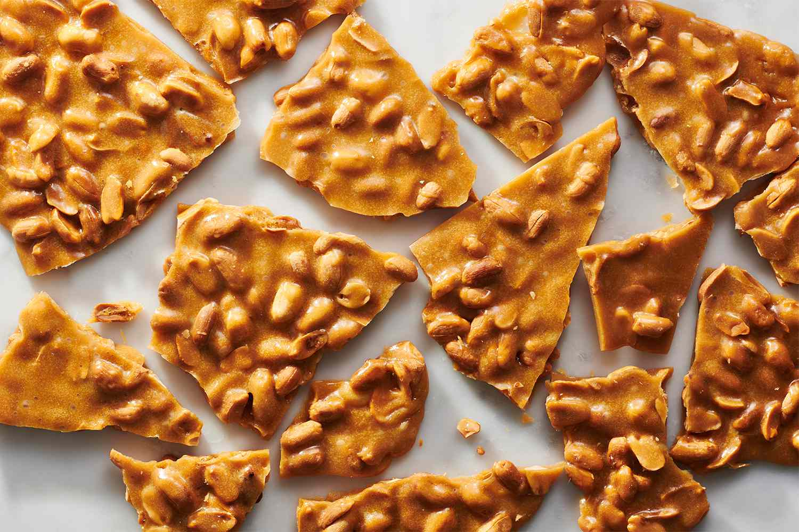

Peanut Brittle
Homepage

A sweet and salty treat with the perfect candy crunch!
Ingredients
- White Sugar (1 cup)
- Light Corn Syrup (1/2 cup)
- Water (1/4 cup)
- Salt (1/4 teaspoon)
- Peanuts (1 cup)
- Unsalted Butter (2 tablespoons)
- Baking Soda (1 teaspoon)
Steps
- Have all ingredients measured out before starting
- Grease a large rimmed baking sheet. Set aside.
- Combine sugar, corn syrup, water, and salt in a heavy, 2-quart saucepan over medium heat.
- Stir until sugar is dissolved and the mixture comes to a boil, about 5 minutes.
- Stir in peanuts and set a candy thermometer in place. Continue cooking, stirring occasionally, until the temperature reaches 300 to 310 degrees F (150 to 155 degrees C)
- Remove from the heat. Quickly stir in butter and baking soda, then immediately pour mixture onto the prepared baking sheet. Quickly use 2 forks to lift and pull the mixture into a 12x14-inch rectangle. Let cool until completely firm, at least 30 minutes.
- Use a mallet to break peanut brittle into pieces.
Original AllRecipes Recipe